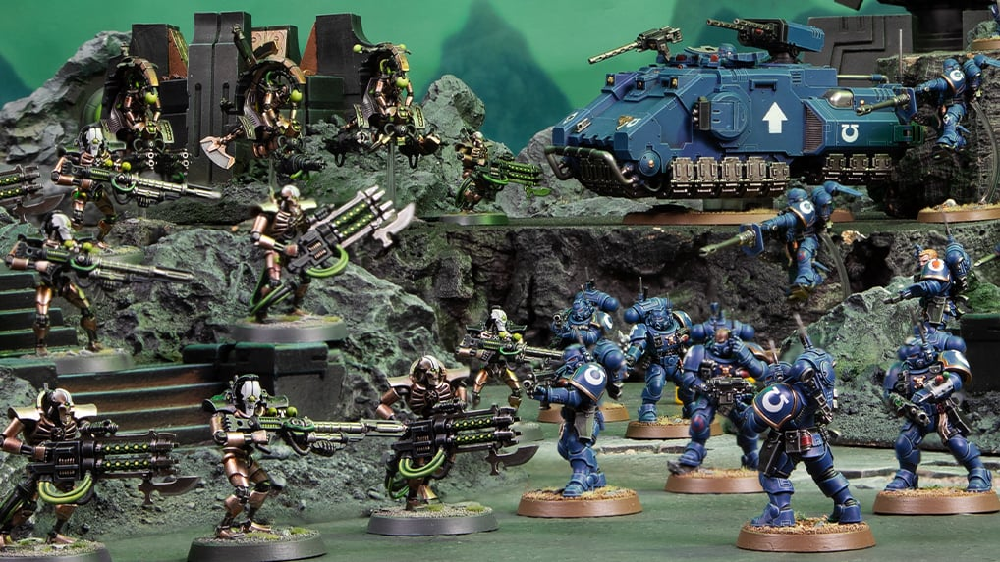
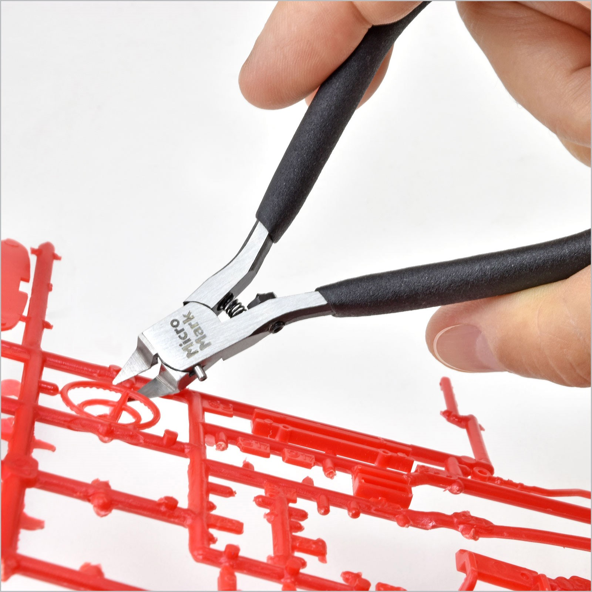
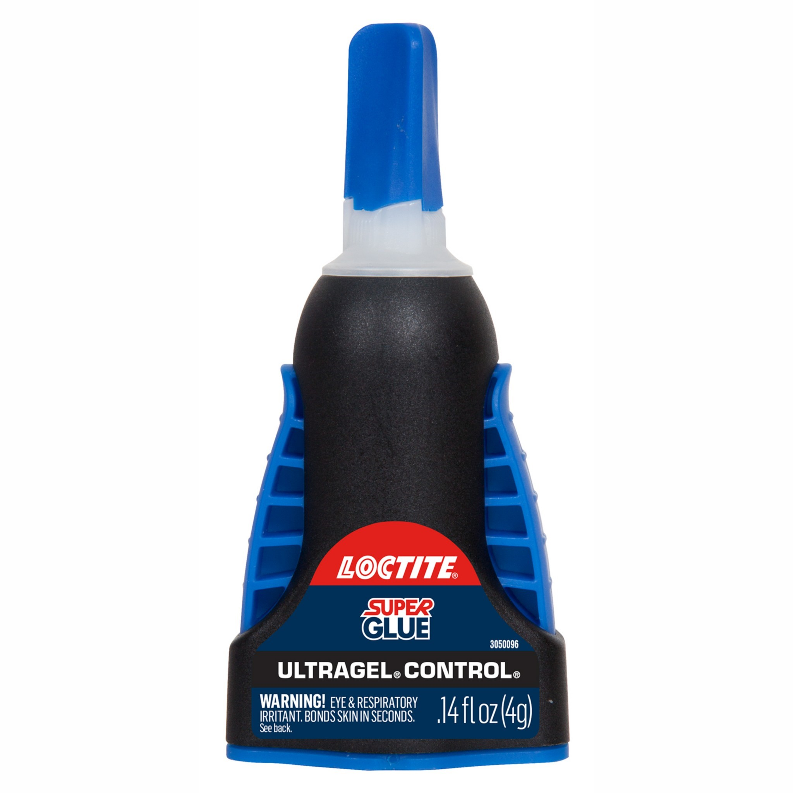
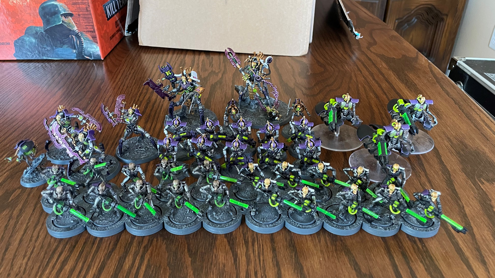
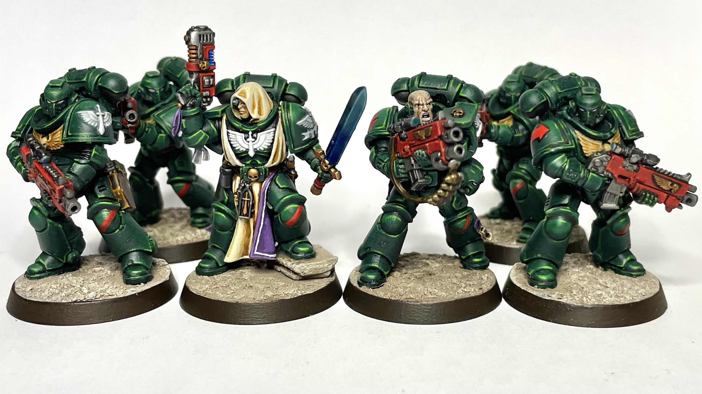
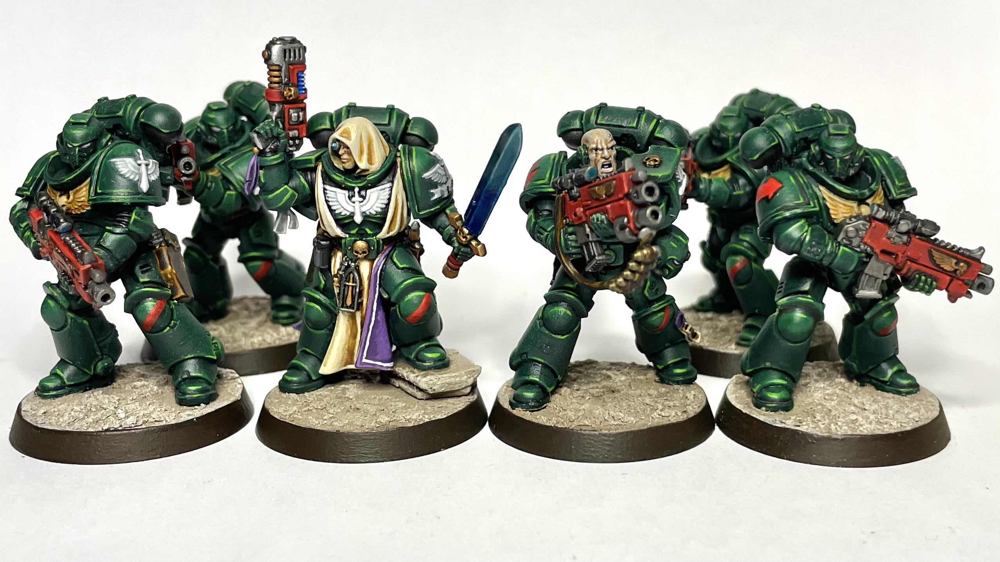
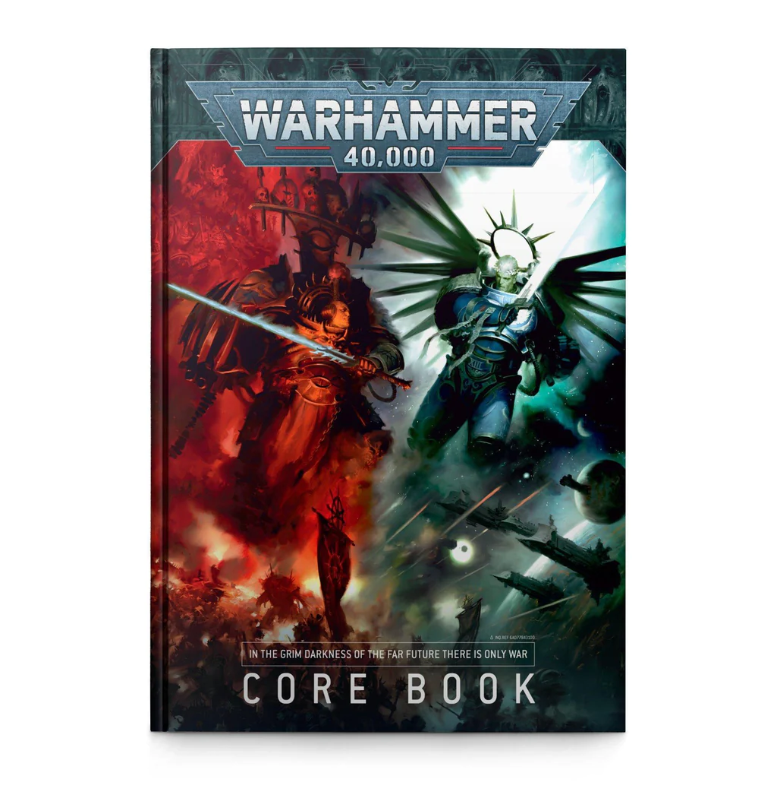
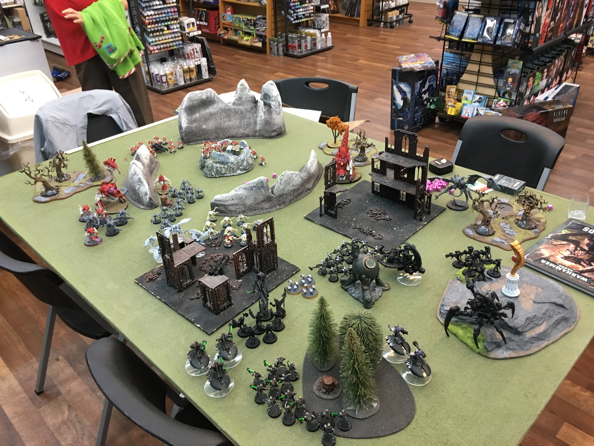

A Lil' Bit of Info About Lil' Guys
If you’re reading this article, you likely have some interest in miniature centric tabletop games, especially in the Warhammer universes. Before you begin this journey, there’s some tips I’d like to impart to you. First off, Warhammer has two different universes you can have fun with, first there is the base “Warhammer Fantasy” setting which is a grim dark, high fantasy setting. It borrows a lot from Tolkien’s “Lord of The Rings” but a bit more over the top. Then there is the “Warhammer 40,000” setting, which takes place in the far flung, grim dark future of the 41st millennium. This setting is much more focused on sci-fi elements intermingled with minor fantasy motifs. Deciding which setting to start out in is one of the earliest decisions you’ll be making in this journey, so looking into both and finding which one interests you more is an important first step, assuming you haven’t already made up your mind
Getting Started
In order to get started with collecting and playing Warhammer, I recommend you take some steps in planning ahead to make things more manageable for you. This hobby can be overwhelming and it’s a good idea to have forethought to keep things in order for yourself. I suggest first looking at what hobby supplies and tools you may need, decide on what game/rule system you want to play in, and finally decide on a faction that is playable in that game system.
Supplies and Hobby Tools
Warhammer miniatures produced by Games Workshop come unassembled on what is known as a “sprue”. These are plastic frames that are used to aid in the production of high quality plastic miniatures. Since the minis come unassembled you’ll need some tools to get them put together. First thing you’ll need is a tool to get individual bits off the sprue, most hobbyists use snippers or cutting pliers, as shown below. A hobby knife is also very helpful because the snippers won’t get 100% of the sprue off the pieces and a hobby knife is a good way to clean up and shave off those unsightly nubs. The next thing you’ll need is something to attach these pieces together. Cyanoacrylate super glue is the best thing for the job. There are many brands and consistencies, but I find the “Loctite” Gel super glue is good for beginners.
 Decide a Game System
Within the two Warhammer settings, there are several different game systems of varying scale to choose from. “Warhammer: Age of Sigmar” and “Warhammer: 40k” are the two flagship game systems for the fantasy and sci-fi settings respectively. These are both games that are meant to simulate all out war where you control a large army made up of multiple squads of models, commanders, and possibly even controlling large vehicles, monsters, and other war machines. But there are also smaller versions of either settings, “Warcry” takes place in the fantasy setting and allows players to command a small warband of soldiers or creatures. “Kill Team”, on the other hand, takes place in the sci-fi setting where players control a singular squad of miniatures. These game systems are much more accessible since you don’t have to buy nearly as many miniatures to be able to play the game. [INSERT IMAGES OF WARHAMMER LOGOS]

Decide a Faction
Now that you have thought about what game system you want to play, it’s time to think about what faction you want to play. There’s an absurd amount of factions to choose from, each with their own unique rules and lore. But most factions can only be brough in one game system or the other, not both. The one exception to that rule is “Daemons”, both the fantasy and sci-fi setting share the same daemons and are typically playable in both settings. Either Way, check out these links to help yourself decide on what faction you may want to collect and play with. Here is a list of Fantasy Factions and Sci-fi Factions Once you have settled on a faction, it’s time to look into which “sub-faction” you’re interested in. Some sub-factions have whole rulebooks of extra rules, some sub-factions have a paragraph of extra rules, it all depends on the faction you decided to choose.
Assembling Your Army
As I mentioned before, the miniatures come unassembled on plastic frames, so you’ll have to make them yourself. Luckily, each box of Warhammer miniatures comes with a helpful instruction book that tells you how to assemble it properly. This is where your hobby supplies come in. I suggest cutting off all the marked pieces for a particular step, followed by cleaning up the sprue connection points with your hobby knife. Then, before adding any glue, do something that is known as “dry fitting” this means just putting the pieces together without glue to understand how they properly go together. Trust me, it can be a real pain if you glue something on incorrectly. Keep following this process until your box of miniatures is assembled! And watch out, some miniatures have “options” where you can build them in different configurations to give them different rules on the table top. For example, some models get a choice of what ranged or melee weapon they’re equipped with, and each of those guns has unique rules.
Painting Your Army
These unassembled miniatures come as grey plastic. Some people never paint any of their minis and leave them grey, some people pay other people to paint them, but most people paint their miniatures themselves. First it’s a good idea to think of a color scheme you like for your chosen faction and try to find tutorials online to find what paints would work best for you. There’s plenty of painting tutorials on YouTube. You’ll have an easier time replicating existing paint schemes, but don’t be afraid to come up with your own. Typically, your local game store will have some section that includes Citadel paints (Games Workshop’s paint brand, they produce the miniatures, but feel free to use other brands instead.). This section likely also has some miniature hobby brushes. I suggest starting off with synthetic and as you progress as a painter you may want to try out “Kolinsky Sable Hair” brushes. These are higher quality and use sable hairs for the bristles. They’re more expensive and harder to maintain, but easier to work with while they’re in good condition.
 

Learn How the Game System is Played
The next step to think about is learning the rules of the game system you chose. Hopefully you have looked into this a bit before making your final decision. The larger scale games (Age of Sigmar and 40k) are much more complicated and a bit harder to learn, but the smaller scale games (Warcry and Kill Team) are a bit more simple in their ruleset. They are both fairly complicated to learn and other people have done a much better job at explaining how to play these games. Below I have linked some tutorial videos that should be helpful for new players.
Learn About Your Army's Rules
Now that you’ve begun to learn the game system’s rule set, it’s time to learn about your faction and sub-faction. Most armies/factions have dedicated rule books explaining their rules as well as their lore. These books can be a bit expensive so if you want to forego the book itself, there are some helpful websites that include the rules in a free format such as Wahapedia. You can easily play these rules straight out of the book, but if you intend to do matched/competitive play, it is useful to look up any FAQ’s/errata that may have come out since the publication of the faction rule book.
Find People to Play With
Now you should be all ready to go with all the things you need to get going with miniature wargaming. All that’s left is to find someone to play with. Typically, if you’re getting into Warhammer, it’s because you already have a friend who’s into it and convinced you to join them. I’m more than sure they’d love to play the game with you, but if you got into Warhammer 100% on your own, don’t worry! There are other ways to find great people to play with. Try searching for “Tabletop game stores near me”, There should be at least one or two results in your area, or even more if youre lucky. Many of these stores have some sort of gaming space where tables are set up and prepared for people to play tabletop games. If your store has one of these spaces, find their calendar and find out if/when they hold events for your chosen game. In my personal experiences, many of these communities are exceptionally welcoming and inviting for new players. In fact, at my local store, there is a table set up with the contents of a Kill Team starter box, painted up and ready to go so people can try out the game for free in the store. And if youre lucky, your local store may even have a fairly bustling community for your chosen game system. In whatever scenario you find yourself in, I hope you have a great experience with your new hobby, and good luck to you.
